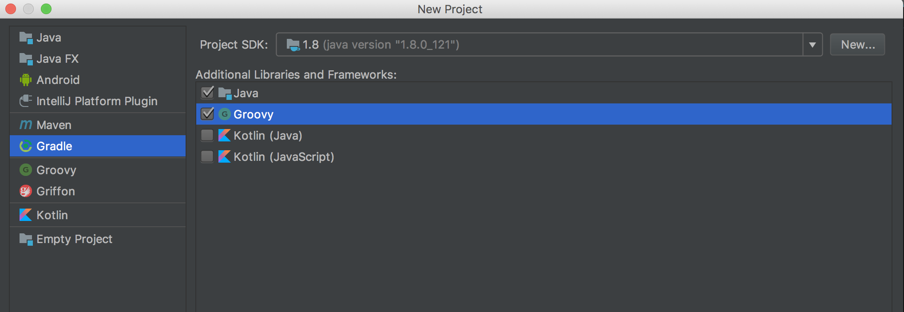
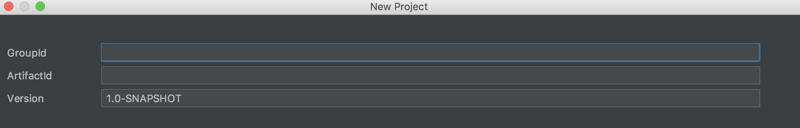
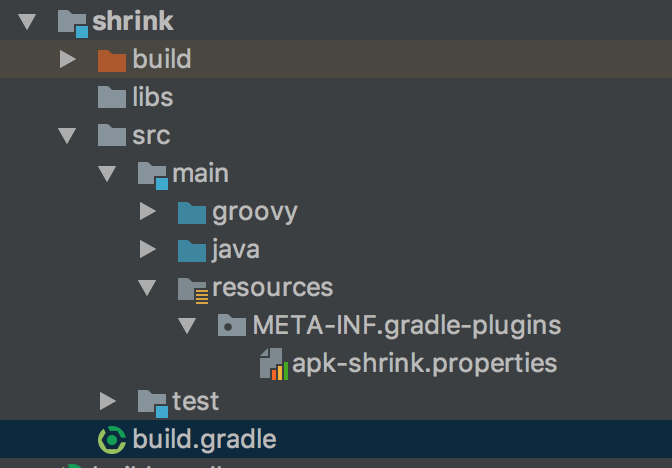
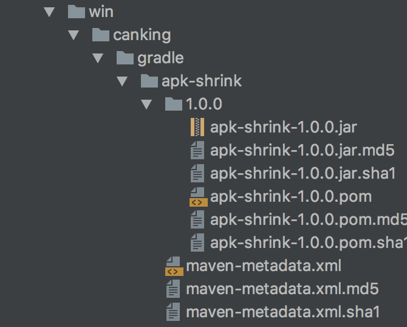
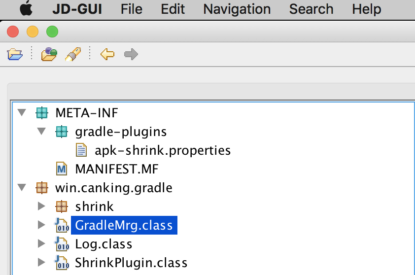
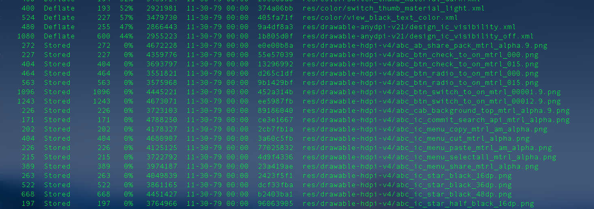
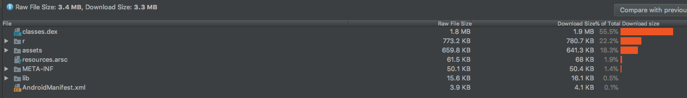
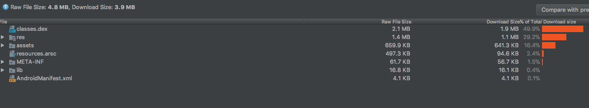

项目开发中，随着业务的增长，常常需要在apk编译阶段对包代码或是资源做一定的自定义修改，比如热修复，插件生成，无埋点统计，渠道包生成等等。
但是公司项目业务开发人员基本上都很少接触到相关技术，这里以学习的态度，实现一套用7zip压缩apk资源文件的gradle插件。
APK瘦身实战 资源自定义7z压缩
APK瘦身在行业内已经有很多成熟的开源技术体现方案，如美团Android App包瘦身优化实践这篇博客中详细的说明。
这里我们从资源压缩入手，用7z工具，实现一套自己的资源压缩gradle插件。
Gradle 插件简单介绍
一般简单的逻辑可以写在build.gradle文件中，但是本着便于管理及重用，可以把插件独立为项目。
独立的gradle插件编译后，我们可以发布到本地maven库，或是jcenter中心，供其他项目引用。
项目结构介绍
Gradle插件开发可以用android studio，也可以用IntelliJ。AS开发需要自己创建插件项目结构，而IntelliJ可以自动生成项目结构，但是用起来一些操作不是很顺手。
如下图，用IntelliJ New出来一个项目，按照引导，即可生成我们的初始项目结构及gradle-wrapper。

这里填写插件 GroupId，ArtifactId,已经插件版本Version。如果不确定，可以先随意写个，随后可以在项目中更改。

标准的项目结构如下：

如果用as开发，需要手动创建如上结构。从项目中可以看出支持groovy，和java的混合开发，当然从IntelliJ创建项目引导可以看出同时也是支持kotlin的。
每种语言都有各自的语言特点，比如我们开发gradle插件，在与项目build编译交互的地方用groovy开发，业务的核心代码用我们擅长的语言（java）开发，这里使用7zip的地方就是用java封装实现的。
resources文件夹比较重要，这里的文件标明了插件的入口，及插件的引用名字。如果导出maven库找不到自己插件引用，可以先检查下这个文件结构是否正确。
apk-shrink.properties
1
| implementation-class=win.canking.gradle.ShrinkPlugin
|
1
| apply plugin ‘apk-shrink’
|
当build.gradle 解析 apply plugin 时，就会找到 win.canking.gradle.ShrinkPlugin, 开始执行apply()方法
项目可能遇到的问题
1，发布本地maven，build.gradle配置如下
1 2 3 4 5 6 7 8 9 10 11 12 13 14 15 16 17 18 19 20 21 22 23 24 25 26
| apply plugin: 'groovy' apply plugin: 'java' apply plugin: 'maven' group 'win.canking.gradle' version '1.0.1' archivesBaseName = 'apk-shrink' compileGroovy { sourceCompatibility = 1.7 targetCompatibility = 1.7 options.encoding = "UTF-8" } dependencies { compile gradleApi() compile localGroovy() compile 'com.android.tools.build:gradle:2.1.0' } uploadArchives { repositories.mavenDeployer { repository(url: uri('../../ChargeHelperPro/gradleplugin/')) } }
|
执行如下代码，可以生成本地的maven库
1
| gradlew -p {module name} clean build uploadArchives --info
|
2，不同JDK编译问题，特别注意，需要配置sourceCompatibility
3, 引用找不到问题
先检查导出目录，是否生成了maven。目录结构如下：

反编译生成的jar包，查看打包是否正确。

APK资源自定义压缩
APK包结构
一个apk文件本质上就是一个zip压缩文件，我们可以用解压缩工具解压查看内部结构。
| name |
desp |
| res |
资源文件，该文件下资源都会映射到项目R文件中，生成引用ID |
| assets |
静态资源文件，访问是需要用到 AssetManager |
| lib |
第三包jar或者native so库 |
| META-INF |
签名信息，CERT.RSA CERT.SF MANIFRST.MF |
| AndroidManifest |
项目清单文件，包含四大组件，包信息，权限等 |
| classes.dex |
java的class文件通过dx工具生成的安卓执行文件 |
| resources.arsc |
编译后的二进制资源文件，包含代码对资源的引用关系 |
资源文件压缩

从图中看出apk中有些资源文件存储方式为stored，是未经压缩状态，我们可以对apk再处理，通过高压缩率的工具（7zip）压缩文件，达到瘦身目的。
获取7zip工具路径
通过“which 7za“获取PC上7zip工具目录
1 2 3 4 5 6 7 8 9 10 11 12 13 14 15 16 17 18 19
| ProcessBuilder pb = new ProcessBuilder(new String[]{"which", "7za"}); String sevenZipPath = ""; try { Process process = pb.start(); InputStreamReader ir = new InputStreamReader(process.getInputStream()); LineNumberReader input = new LineNumberReader(ir); String tmp; while ((tmp = input.readLine()) != null) { if (tmp.endsWith(File.separator + "7za")) { sevenZipPath = tmp; Log.a("Shrink", "7zip path:" + sevenZipPath); } } process.waitFor(); process.destroy(); } catch (Exception e) { Log.e("Error", "no shrink" + e.getMessage()); return; }
|
定义要压缩的文件类型：
1 2 3 4 5 6 7 8 9 10 11 12 13 14 15 16 17 18
| public class CompressInfo { public Set<String> compressFilesPattern; private CompressInfo() { this.compressFilesPattern = new HashSet<>(); } public static CompressInfo init() { CompressInfo info = new CompressInfo(); info.compressFilesPattern.add(".png"); info.compressFilesPattern.add(".jpg"); info.compressFilesPattern.add(".JPG"); info.compressFilesPattern.add(".jpeg"); info.compressFilesPattern.add(".gif"); info.compressFilesPattern.add(".arsc"); return info; } }
|
调用7za进行压缩目标文件
1 2 3 4 5 6 7 8 9 10 11 12 13 14 15 16 17
| private static void do7zip(String srcDirPath, String outZipPath, String sevenZipPath) throws IOException, InterruptedException { String srcFilesPath = new File(srcDirPath).getAbsolutePath() + File.separator + "*"; outZipPath = new File(outZipPath).getAbsolutePath(); ProcessBuilder pb = new ProcessBuilder(new String[]{sevenZipPath, "a", "-tzip", outZipPath, srcFilesPath, "-mx9"}); Process process = pb.start(); InputStreamReader ir = new InputStreamReader(process.getInputStream()); LineNumberReader input = new LineNumberReader(ir); String line; while ((line = input.readLine()) != null) { Log.d(input.getLineNumber() + ":" + line); } process.waitFor(); process.destroy(); }
|
指定task来执行压缩任务
1 2 3 4 5 6 7 8 9 10 11 12 13 14 15 16 17 18 19 20 21 22 23
| @Override void apply(Project project) { Log.d("shrink apply") if (project.getPlugins().hasPlugin(AppPlugin)) { def config = project.extensions.create(SHRINK_CONFIG, ShrinkExtension) project.afterEvaluate { project.tasks.matching { println it.name it.name.startsWith('packageRelease') } each { t -> t.doLast { if (config.enable) { Log.d("shrink start...") GradleMrg.do7zipCompressApk(config.apkPath) Log.d("shrink EDN") } } } } } }
|
注：此Demo依赖项目的编译流程，需要在自己项目中build.gradle中配置相关压缩参数：
1 2 3 4
| shrinkConfig { enable = true apkPath = '/PATH/App-release.apk'//可通过代码方法自动获取 }
|
也可以自定义一个单独的task，不依赖编译流程。
压缩效果对比：

本案例源码以提交到GitHub，欢迎交流学习及star。
欢迎转载，请标明出处：常兴E站 canking.win